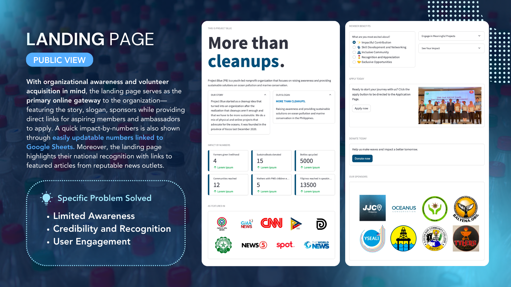
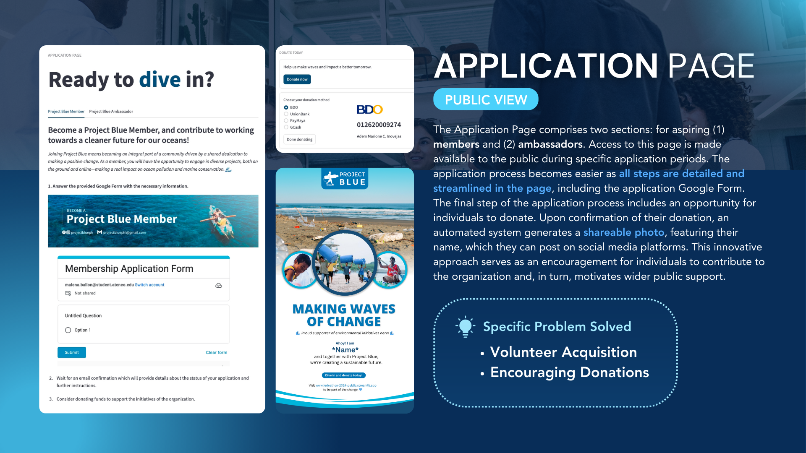
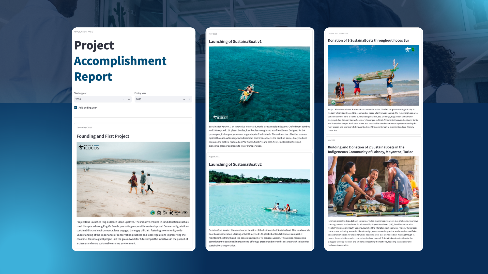
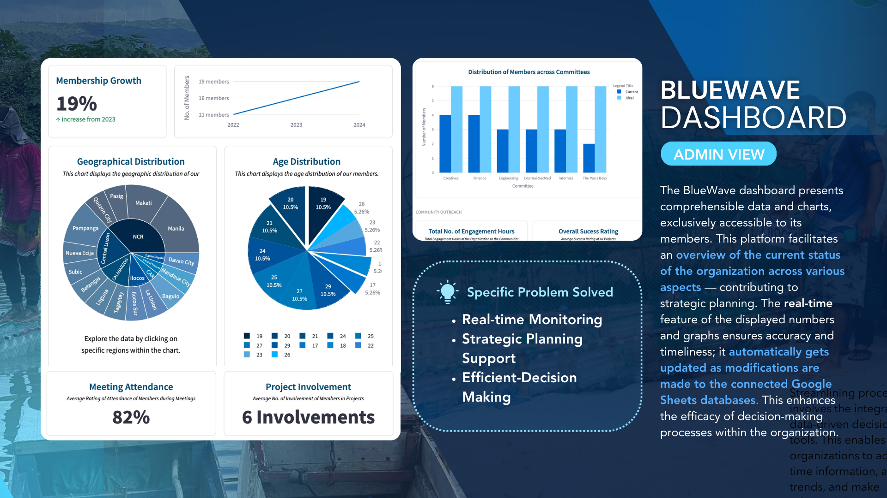
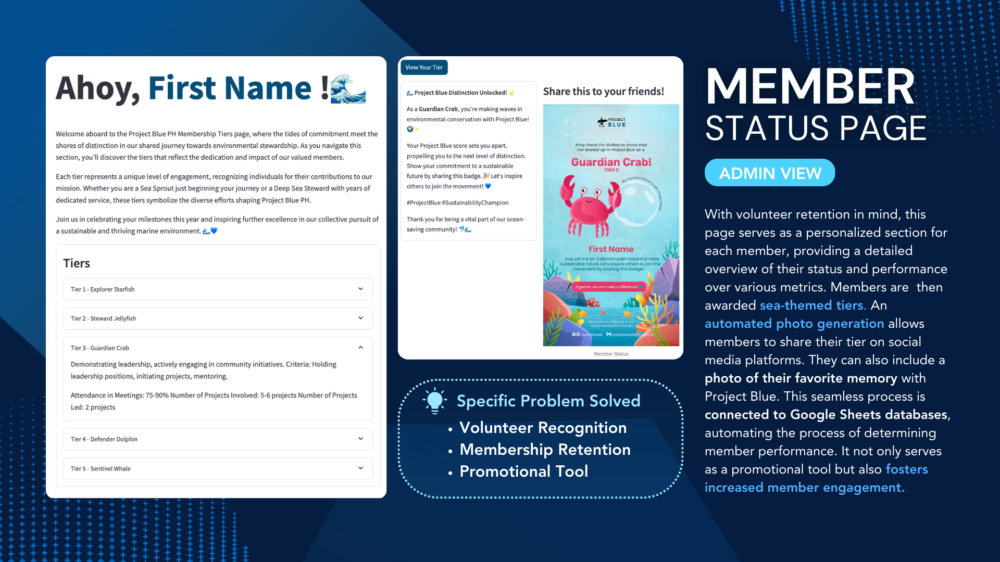
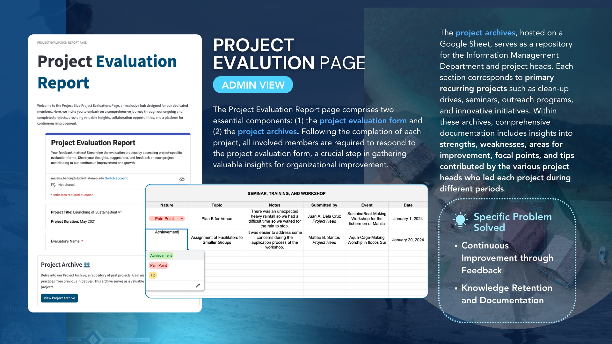

IEx 2024
IEdeathon 2024


Photos taken during the presentation day.
Overview
In response to the challenge of sustaining the operations of Project Blue, a youth-led environmental nonprofit, our team proposed BlueWave Connect: an all-in-one web application that revitalizes Project Blue’s member base by systemizing the volunteer acquisition process, developing strategies to maintain members’ active involvement, and maximizing overall organizational efficiency.
Our solution won 2nd place, besting teams from various universities in the country. Notably, Project Blue has reached out to our team to offer potential partnership.
Key Features
To implement BlueWave Connect, our team recognized the need to introduce the Information Management Commitee, BlueWave Connect. This committee will focus on data governance, website development and maintenance, and information systems integration, to name a few. The solution is divided into two components: The public website for new members, and the organization’s administrative website for operations.
Public Site



- Landing Page
- The Landing Page serves as the primary online gateway to the organization—featuring the story, slogan, sponsors while providing direct links for aspiring members and ambassadors to apply.
- A quick impact-by-numbers is also shown through easily updatable numbers linked to Google Sheets. Moreover, the landing page highlights their national recognition with links to featured articles from reputable news outlets.
Limited awareness, credibility and recognition, and user engagement
- Application Page
- The Application Page comprises two sections: for aspiring (1) members and (2) ambassadors. Access to this page is made available to the public during specific application periods. The application process becomes easier as all steps are detailed and streamlined in the page, including the application Google Form.
- The final step of the application process includes an opportunity for individuals to donate. Upon confirmation of their donation, an automated system generates a shareable photo, featuring their name, which they can post on social media platforms. This innovative approach serves as an encouragement for individuals to contribute to the organization and, in turn, motivates wider public support.
Volunteer acquisition and encouraging donations
Other pages that complete the public site include: - Organizational Structure Page - About Us Page - Upcoming Events Page
Admin Site



- BlueWave Dashboard
- The BlueWave dashboard presents comprehensible data and charts, exclusively accessible to its members. This platform facilitates an overview of the current status of the organization across various aspects — contributing to strategic planning. The real-time feature of the displayed numbers and graphs ensures accuracy and timeliness; it automatically gets updated as modifications are made to the connected Google Sheets databases. This enhances the efficacy of decision-making processes within the organization.
Real-time monitoring, strategic planning support, and efficient decision making
- Member Status Page
- With volunteer retention in mind, this page serves as a personalized section for each member, providing a detailed overview of their status and performance over various metrics. Members are then awarded sea-themed tiers. An automated photo generation allows members to share their tier on social media platforms. They can also include a photo of their favorite memory with Project Blue.
- This seamless process is connected to Google Sheets databases, automating the process of determining member performance. It not only serves as a promotional tool but also fosters increased member engagement.
Volunteer recognition, membership retention, and promotion
- Project Evaluation Page
- The Project Evaluation Report page comprises two essential components: (1) the project evaluation form and (2) the project archives. Following the completion of each project, all involved members are required to respond to the project evaluation form, a crucial step in gathering valuable insights for organizational improvement.
- The project archives, hosted on a Google Sheet, serves as a repository for the Information Management Department and project heads. Each section corresponds to primary recurring projects such as clean-up drives, seminars, outreach programs, and innovative initiatives. Within these archives, comprehensive documentation includes insights into strengths, weaknesses, areas for improvement, focal points, and tips contributed by the various project heads who led each project during different periods.
Project refinement and documentation
Methodology
The prototype of BlueWave Connect was made using Streamlit, an open-source Python framework for data science applications. For data-driven features such as the dashboard, we relied on connecting Streamlit to Google Sheets. We also used data visualization Python packages.
BlueWave Connect Demo Video
Links
About the Contest
Organized by the UP Industrial Engineering Club, IEdeathon is a case competition with a focus on creating practical long-lasting solutions for disadvantaged communities through helping out non-profit organizations. This is done through applying the tools and concepts found in industrial engineering to identify problems and to ultimately come up with solutions.
This year, IEdeathon partned with Project Blue, a youth-led nonprofit environmental conservation organization born out of the passion of the founder for sustainable development specifically SDG 14: Life Below Water. It started as a cleanup idea that turned into an organization after the realization that cleanups aren’t enough and that we have to be more sustainable. It was founded in the province of Ilocos last December 2020.